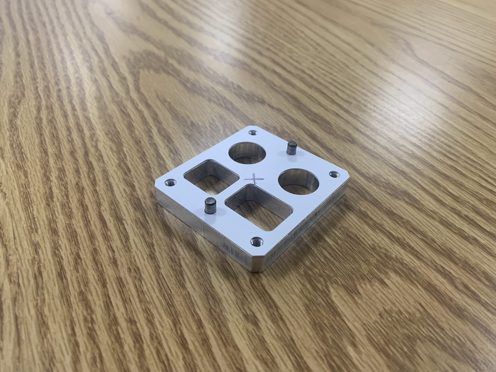
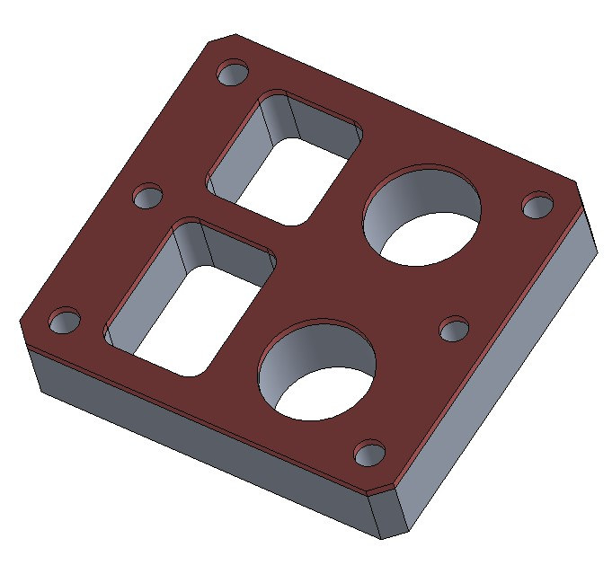
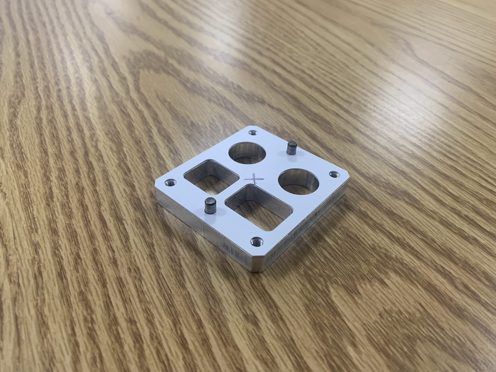
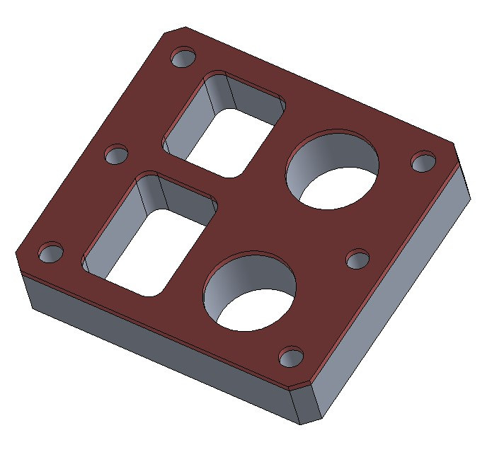
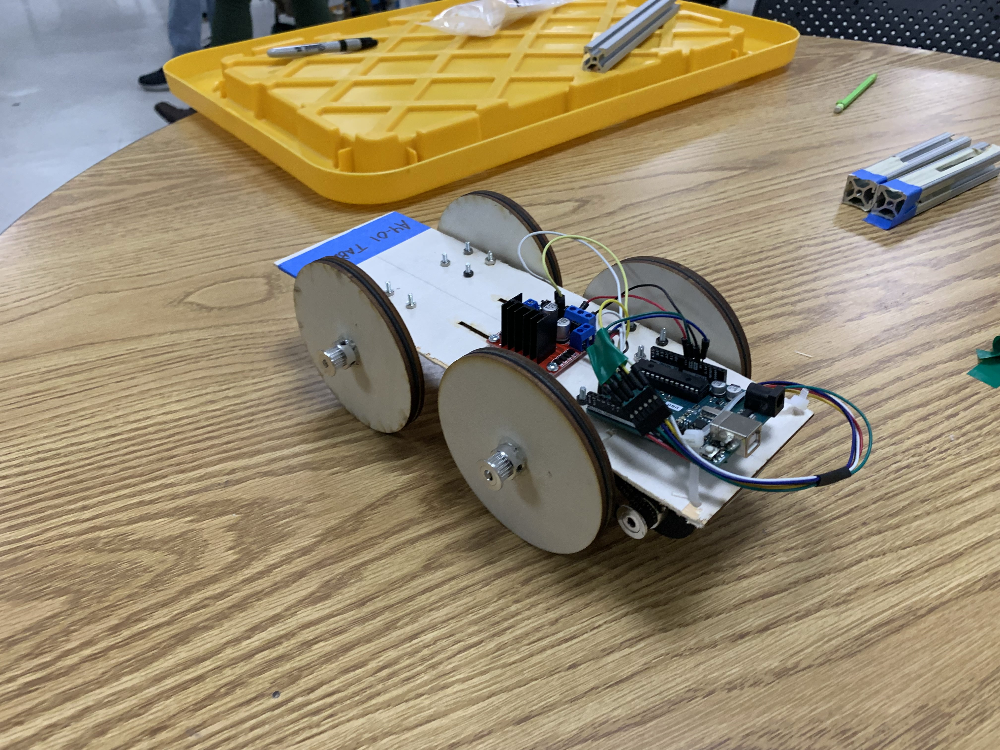

These are all the projects I have done for my undergraduate ME360 product design class from Boston University. The goals of this class were to learn how to design and prototype different engineering projects. These skills were developed through three different projects: the gasket project, the 2.5 DOF Cartesian motion sytem, and the motor speed controller.
The first project was to design a gasket that would be located on an aluminum block with pre machined holes, slots, and alignment pins. This was an exercise in using calipers to accurately measure every dimenion of the block and then designing a gasket that would fit perfectly on the block. Below you can see the sketch of the gasket along with the measured dimensions (all values are plus or minus 0.001" due to caliper accuracy). Next, a CAD model was made in SolidWorks of the gasket in order to define toolpaths in GibbsCAM. Once tools paths were defined, a thin piece of plastic was placed in a CNC mill to perform the toolpaths. Things to note were the double sided tape used to hold the plastic in place. The final product was a gasket that fit perfectly on the aluminum block. I encountered some challenges with measuring the diagonal length of the gasket because of the awkward grip of the calipers. However, with some clever manuveuring I was able to get an accurate measurement. Another challenge was setting up the CNC mill to perform the toolpaths. This involved double checking that the toolpaths were going at the correct speeds and feeds for this material (for a thin piece of plastic, the RPM was cranked up to about 10,000). Overall, this project was a great introduction to the class and I learned a lot about making a detailed sketch that would be used for a CAD model and then a CNC mill.

 



The second project was to design and build a motion system with 2.5 degrees of freedom (DOF). To begin this assignment we first made a simple linear stage by gluing some foam pieces together to move a small foam platform on a ball screw. This was done to get a feel for how linear stages needed to be constrained such that they moved in one direction without incorrectly twisting. With that done, we started designing a project that can make use of the 2.5 degrees of freedom. We decided on a simple stamper that can move across a plane and stamp down a fixed distance. The continuous movement across the plane satisfied the first two degrees of freedom while the two set points of up and down gave it the last 0.5 degrees of freedom. The motion system was acomplished with four different NEMA 17 stepper motors and a driver board that accomodated power control and directional logic for each motor. We used Repetir as a program for sending GCODE to an Arduino library that would then send the appropriate signals to the driver board. The motion system was designed to move an end effector in the x, y, and z directions. The x and y directions were controlled by stepper motors on linear rails with a series of belts and pulleys. The z direction was controlled by a stepper motor that would move a rack and pinion setup. The z axis included a stamp pad which would be used to stamp a piece of paper. In our footprint we included an ink pad and an envelope so the system could stamp an envelope. The final product was a motion system that could move an end effector in the x, y, and z directions. All components were 3D printed. The biggest challenge was the rack and pinion 3D print. The tolerances on that part were tricky to get right since the teeth needed to be able to mesh with the pinion. Additionally, a groove was required to ensure the rack wouldn't be freely floating. This part took a few tries to get right. Another challenge was the belt and pulley system. The belts needed to be tight enough to move the end effector but not too tight that the stepper motor couldn't move it. We accomplished this by using a tensioner that could be adjusted to the correct tension. This tensioner matched the tooth profile of the belts we were given. With this, we tried to have as many parts as similar as possible to ensure correct function.
The final project was to design a system that transports a foot long beam of 8020 aluminum extrusion a five foot distance and back, stop to stop. The challenge was that the beam must be completely free and not connected to the platform it sits on. The bar would be supported by its bottom face only. The objective was thus to minimize the time required to transport the bar there and back. To begin, we first calculated the maximum acceleration that would cause the bar to tip over. This was done with basic first principles such as rotational moment of inertia. The maximum acceleration was found with the equation: gb/l, where g is the gravitational constant, b is the length of the base, and l is the height of the bar. This equates to about 0.8175 m/s^2 with a bar that is 1" x 1" x 12". Next, a simulation was done in SolidWorks to corroborate this value. The simulation was done with a simple cart that would hold the bar and move it back. This agreed closely with the theoretical value calculated with first principles. The cart was made out of some balsa wood, 3D printed motor mounts, 3D printed axle mounts, and wheels that were laser cut and included an O-Ring. The project also required the use of an encoder to make sure the acceleration profiles of the car were met. Knowing the maximum possible acceleration, we programmed the servo motor (and the encoder) to first accelerate to the positive maximum acceleration, the decelerate to the maximum negative acceleration, and then accelerate back to the positive maximum acceleration. This was done to minimize the time it took to transport the bar. Graphs are shown below of the ideal acceleration, velocity and position profiles as functions of time. The issue was that the theoreitcal maximum acceleration was not achievable instantaenously, and it was very sensitive to the weight of the bar. This was fixed by lowering the maximum acceleration of the car and by allowing the acceleration to slow down at an earlier point in order to accurately stop the bar. The final product was a cart that could transport a bar back and forth in around 15 seconds.
